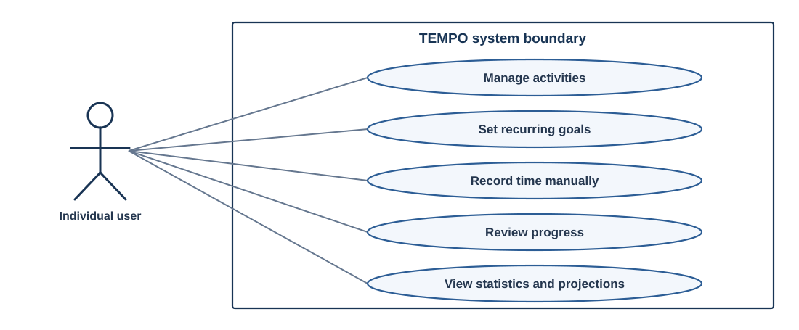
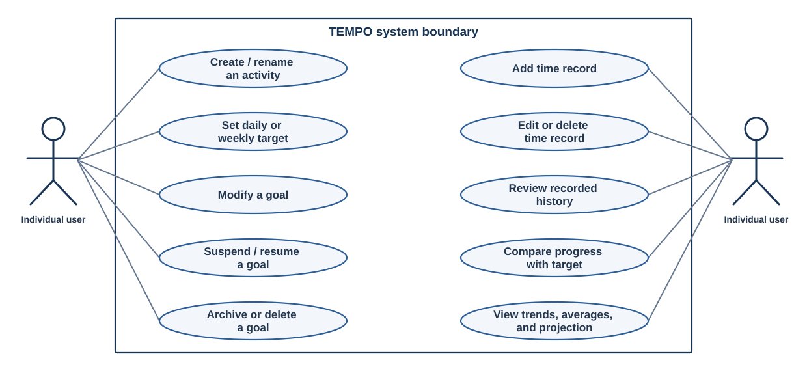

Overview & Requirements
TEMPO tracks the time people spend on personal activities such as studying, reading, and exercise. Users set daily or weekly goals, record individual sessions, and review their progress using charts and statistics.
1. System Overview
The time devoted to studying, reading, or practicing an instrument is a useful measure of personal progress. TEMPO, Time and Effort Monitoring for Personal Objectives, records the duration of individual sessions and compares the accumulated time with daily or weekly goals. Users can review their progress using totals, averages, charts, and estimates calculated from saved time records.
1.1 Customer and users
TEMPO is designed for people who want to track the time devoted to personal goals such as studying, exercise, or practicing an instrument. Each person can create activities and establish goals suited to their own schedule. Students can track their study hours, musicians can review practice sessions, and readers can monitor how much time they spend reading.
Users begin by naming an activity and establishing a daily or weekly goal. After completing a session, they record the time spent and can review or correct their saved records whenever they return to the application.
2. System Scope and Boundaries
Users create activities, establish daily or weekly goals, and manually record the date and duration of each completed session. TEMPO associates each time record with its activity and uses the saved information to calculate totals, daily averages, charts, and estimates for future dates. When a record is corrected or deleted, the application recalculates the affected reports.
The system covers activity creation, goal management, manual time recording, and progress reporting. Each activity has its own status and a current goal. Revising a goal creates a new goal while retaining the previous version for historical comparisons. Saved time records remain associated with their activity.
2.1 Terms used in the requirements
An activity identifies a personal objective, such as reading or practicing the piano, and has an active, suspended, or archived status. The status belongs to the activity and applies to its current goal. A goal specifies the duration planned for each day or week. TEMPO retains each goal version and the date it became current. A time record stores the date and duration of an individual session. TEMPO compares recorded time with the goal applicable to each day or week and estimates future totals from saved time records.
3. Expected User Workflow
A student who wants to study seven hours each week creates a Study activity with a seven-hour weekly goal. After a forty-five-minute session in the morning and a thirty-minute session in the evening, the student records each session in TEMPO. The application saves two time records and calculates progress from their combined duration, eliminating the need to add the minutes manually.
If a saved date is incorrect, the student can edit the time record and TEMPO recalculates the totals and updates the chart. Revising the current goal creates a new goal without changing past daily or weekly goal comparisons. An activity and its current goal can be suspended, resumed, archived, or restored without losing their records. Deleting an activity requires confirmation and removes its goals and time records. A person tracking reading or exercise time can use the same process with a daily or weekly target suited to the activity.
4. Functional Requirements
Each functional requirement describes an action users can perform or a result TEMPO must calculate. The FR identifiers make the requirements traceable to design components, and the verification column provides a practical test for each one. The requirements include activity and goal management, time records, and progress reports. FR-19 and FR-20 extend activity and goal management without changing the existing identifiers.
4.1 Activities and goals
| ID | Requirement | Verification |
|---|---|---|
| FR-01 | TEMPO shall require an activity name and save the activity after the user provides one. | Create an activity with a valid name, then repeat the operation with a blank name and compare the results. |
| FR-02 | TEMPO shall display saved activities with their current goals and statuses. The Dashboard shall use activity cards for active activities, while the All Activities page shall provide a complete list of active, suspended, and archived activities. | Create active, suspended, and archived activities. Verify that active activities appear as Dashboard cards and all three statuses appear with their current goals in the All Activities list. |
| FR-03 | Renaming an activity shall not change the dates or durations of its saved time records. | Rename an activity and compare its time records before and after the change. |
| FR-04 | The user shall be able to assign a positive duration target to an activity and select a daily or weekly interval. | Save a daily goal and a weekly goal, then inspect the duration and interval stored for each. |
| FR-05 | The user shall be able to revise the target duration or interval of an activity's current goal. TEMPO shall save the revision as a new goal and retain the previous goal. | Revise a goal duration and interval, then verify each revision creates a new current goal and retains all previous goal versions. |
| FR-06 | The user shall be able to suspend and resume an activity and its current goal. TEMPO shall record the status on the activity and apply it to its current goal. | Suspend an activity and verify its status and current goal are suspended; resume the activity and verify its status and current goal are active. |
| FR-07 | The user shall be able to archive an activity and its current goal. TEMPO shall record the archived status on the activity and distinguish archived activities from active activities. | Archive an activity and verify it appears in the archived list, then verify its current goal and saved records remain available. |
| FR-08 | TEMPO shall request confirmation before deleting an activity and its goal. On confirmation, TEMPO shall delete the activity, all its goals, and all its associated time records. | Cancel a deletion request and verify the activity, its goals, and its time records remain. Confirm a second request and verify all are removed. |
| FR-19 | The user shall be able to restore an archived activity and its current goal. TEMPO shall return the activity to active status without deleting its saved goals or time records. | Archive an activity with multiple goal versions and time records, restore it, then verify its current goal, goal history, and time records remain available and the activity is active. |
| FR-20 | TEMPO shall retain each goal version and the date it became current. Revising a current goal shall not change comparisons for days or weeks preceding the revision. | Record sessions for a day and a week, inspect their goal comparisons, revise the current goal, and verify the original comparisons have not changed. |
4.2 Time recording
| ID | Requirement | Verification |
|---|---|---|
| FR-09 | TEMPO shall save the date and positive duration of a session under the activity selected by the user. | Enter a dated session and verify its activity, date, and duration. |
| FR-10 | TEMPO shall save an individual time record for every session, including multiple sessions for one activity on the same date. | Record two sessions on the same date and verify each saved record can be viewed individually. |
| FR-11 | The user shall be able to change the date or duration of a saved time record. | Edit a time record and verify the saved date and duration match the revised values. |
| FR-12 | TEMPO shall request confirmation before deleting a saved time record. | Cancel a deletion request, then confirm the removal of a selected record. |
| FR-13 | TEMPO shall display the dated history of time records associated with a selected activity. | Record sessions under two activities and verify each activity displays its own session history. |
4.3 Progress and reports
| ID | Requirement | Verification |
|---|---|---|
| FR-14 | TEMPO shall total recorded time for a selected day or week and compare the duration with the goal applicable to that period. | Enter sessions with known durations before and after a goal revision, then verify the totals and period-specific goal comparisons. |
| FR-15 | TEMPO shall display a chart comparing recorded time across days or weeks. | Record sessions on several dates and verify the chart agrees with the saved time records. |
| FR-16 | TEMPO shall calculate total recorded time and average daily duration for a selected date range. | Enter sessions with known durations and compare the results with manually calculated totals and averages. |
| FR-17 | TEMPO shall estimate cumulative recorded time by a selected future date using previously saved sessions. | Use a known session history and future date to verify the estimate against the calculation defined in the analytics design. |
| FR-18 | TEMPO shall recalculate affected totals, charts, and statistics whenever a time record is created, edited, or deleted, including deletion with its activity. | Add, revise, and delete time records, including through activity deletion, then verify affected reports agree with the saved history. |
5. Nonfunctional Requirements
Saved time records must be available when users return to TEMPO, and the totals displayed in charts and reports must agree. The nonfunctional requirements specify expectations for data storage, matching calculations, usability, keyboard accessibility, and response time. Measurable targets are included wherever a practical test can be conducted.
| ID | Requirement | Verification |
|---|---|---|
| NFR-01 | Saved activities, goals, and time records shall be available after the user exits TEMPO and returns. | Save records, close and reopen TEMPO, and verify the information is still available. |
| NFR-02 | TEMPO shall use the same duration units and reporting-period boundaries for goal comparisons, totals, averages, and charts. | Enter known durations and verify calculations agree across the corresponding reports. |
| NFR-03 | At least four of five first-time users shall independently create an activity, assign a goal, and record a session during a usability test. | Observe five first-time users completing the sequence independently and record how many finish. |
| NFR-04 | Activity management, goal management, and time recording shall support keyboard input, and the interface shall provide text labels and written chart summaries. | Complete the activity, goal, and time-recording operations using keyboard controls and verify the field labels and chart summaries. |
| NFR-05 | Every progress report shall identify the activity, date range, duration unit, recorded total, and applicable goal. | Inspect daily and weekly reports and verify the required information is visible. |
| NFR-06 | With 100 activities and 10,000 time records, at least 95% of save and progress-view operations shall finish within three seconds in a documented test environment. | Run repeated operations using the specified dataset and record their completion times. |
| NFR-07 | When individual user accounts are used, TEMPO shall restrict access to each person's own activities, goals, and time records. | Test two accounts and verify each account can retrieve its own activities, goals, and time records. |
The first-time user test in NFR-03 and the performance test in NFR-06 require documented test conditions and results. NFR-07 applies when the system design includes personal accounts.
6. Use Cases and UML Diagrams
FIG-01 presents the principal activities in TEMPO, including goal management, time recording, and reviewing progress. FIG-02 provides more detail on editing records, managing activity status, and comparing recorded time with a target. The functional requirements additionally specify restoring archived activities and retaining previous goal versions.


6.1 Use-case descriptions
UC-01. Create an activity and goal
When a user names an activity and sets a daily or weekly time goal, TEMPO saves the information and associates future time records with the activity. The activity name and a positive goal duration are required before the information can be saved. FR-01, FR-02, and FR-04 define the creation and validation requirements.
UC-02. Record and correct time
The user selects an activity and enters the date and duration of a completed session. Each session is saved as an individual time record, including sessions completed on the same day. Corrections apply to the selected time record, and TEMPO recalculates the affected totals and charts. FR-09 to FR-13 and FR-18 specify the recording and correction requirements.
UC-03. Review recorded progress
After selecting an activity and a day or week to review, the user can compare recorded time with the goal applicable to that period. TEMPO displays a chart, daily average, historical totals, and a projection of cumulative time for a selected future date. The projection is an estimate calculated from saved time records. FR-13 to FR-17 and FR-20 define the requirements for reviewing progress.
UC-04. Manage an activity and its goals
A person can change an activity's current goal, suspend or resume the activity and its goal, and archive or restore the activity. TEMPO saves a revised goal as a new version, retains previous goals for past comparisons, and stores status on the activity. Deleting the activity requires confirmation and removes all its goals and time records. FR-05 to FR-08, FR-19, and FR-20 specify these operations.
7. Requirements Verification and Design References
The overall architecture maps numbered components to the requirements they support, and design decisions reference the same FR and NFR numbers. The table identifies which requirements each technical section must account for in its design.
| Design page | Requirement identifiers | Related design work |
|---|---|---|
| Architecture | FR-01 to FR-20 and NFR-01 to NFR-07 | Components and requirement mappings. |
| Activities & Goals | FR-01 to FR-08, FR-19 to FR-20 | Activity cards, goal versions, and activity status transitions. |
| Time Logging & Storage | FR-08 to FR-13, FR-18, NFR-01, NFR-02 | Saved sessions, activity deletion, and data validation. |
| Progress & Analytics | FR-14 to FR-18, FR-20, NFR-02, NFR-05 | Totals, historical goal comparisons, charts, averages, and projections. |
| User Interface | FR-01 to FR-20, NFR-03 to NFR-06 | Activity cards, time-recording screens, navigation, and accessibility. |
7.1 Verification examples
Known session durations can be used to check calculations independently. If a student saves forty-five minutes of study in the morning and thirty minutes in the evening, FR-10 requires two time records and FR-14 requires the daily total to equal seventy-five minutes. Changing the first record to sixty minutes must update the daily and weekly totals to ninety minutes, along with the affected charts and averages under FR-18. The results can be compared with a manual calculation to confirm their consistency. If the student changes a seven-hour weekly goal to five hours, FR-20 requires completed weeks preceding the change to retain the seven-hour comparison.